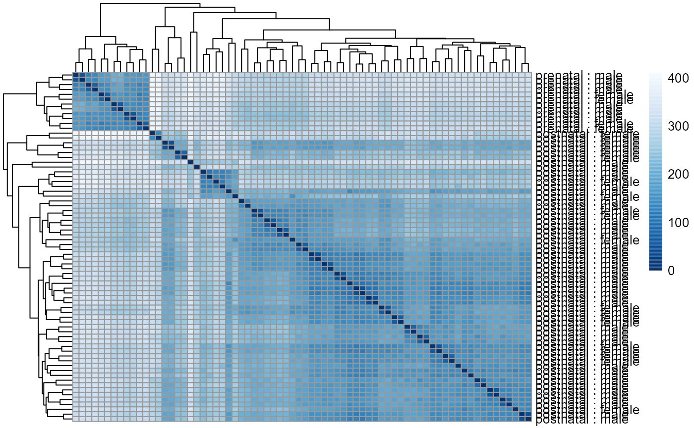

recount workflow: accessing over 70,000 human RNA-seq samples with Bioconductor
Leonardo Collado-Torres
Lieber Institute for Brain Development, Johns Hopkins Medical Campus, Baltimore, MD, 21205, USACenter for Computational Biology, Johns Hopkins University, Baltimore, MD, 21205, USAlcolladotor@gmail.com
Abhinav Nellore
Department of Biomedical Engineering, Oregon Health and Science University, Portland, OR, 97239, USADepartment of Surgery, Oregon Health and Science University, Portland, OR, 97239, USAComputational Biology Program, Oregon Health and Science University, Portland, OR, 97239, USAAndrew E. Jaffe
Lieber Institute for Brain Development, Johns Hopkins Medical Campus, Baltimore, MD, 21205, USACenter for Computational Biology, Johns Hopkins University, Baltimore, MD, 21205, USADepartment of Biostatistics, Johns Hopkins Bloomberg School of Public Health, Baltimore, MD, 21205, USADepartment of Mental Health, Johns Hopkins Bloomberg School of Public Health, Baltimore, MD, 21205, USASource:
vignettes/recount-workflow.Rmd
recount-workflow.RmdAbstract
The recount2 resource is composed of over 70,000 uniformly processed human RNA-seq samples spanning TCGA and SRA, including GTEx. The processed data can be accessed via the recount2 website and therecount Bioconductor package. This workflow
explains in detail how to use the recount package and
how to integrate it with other Bioconductor packages for several
analyses that can be carried out with the recount2 resource. In
particular, we describe how the coverage count matrices were
computed in recount2 as well as different ways of obtaining public
metadata, which can facilitate downstream analyses. Step-by-step
directions show how to do a gene-level differential expression
analysis, visualize base-level genome coverage data, and perform
an analyses at multiple feature levels. This workflow thus
provides further information to understand the data in recount2
and a compendium of R code to use the data.
R version: R version 4.3.0 (2023-04-21 ucrt)
Bioconductor version: 3.17
Package: 1.24.0
Introduction
RNA sequencing (RNA-seq) is now the most widely used high-throughput
assay for measuring gene expression. In a typical RNA-seq experiment,
several million reads are sequenced per sample. The reads are often
aligned to the reference genome using a splice-aware aligner to identify
where reads originated. Resulting alignment files are then used to
compute count matrices for several analyses such as identifying
differentially expressed genes. The Bioconductor project (1) has many contributed packages that
specialize in analyzing this type of data and previous workflows have
explained how to use them (2–4). Initial
steps are typically focused on generating the count matrices. Some
pre-computed matrices have been made available via the ReCount project
(5) or Bioconductor Experiment data
packages such as the airway dataset (6). The pre-computed count matrices in ReCount
have been useful to RNA-seq methods developers and to researchers
seeking to avoid the computationally intensive process of creating these
matrices. In the years since ReCount was published, hundreds of new
RNA-seq projects have been carried out, and researchers have shared the
data publicly.
We recently uniformly processed over 70,000 publicly available human
RNA-seq samples, and made the data available via the recount2 resource
(7) at jhubiostatistics.shinyapps.io/recount/.
Samples in recount2 are grouped by project (over 2,000) originating from
the Sequence Read Archive, the Genotype-Tissue Expression study (GTEx)
and the Cancer Genome Atlas (TCGA). The processed data can be accessed
via the recount Bioconductor package available at bioconductor.org/packages/recount.
Together, recount2 and the recount Bioconductor package
should be considered a successor to ReCount.
Due to space constraints, the recount2 publication (7) did not cover how to use the
recount package and other useful information for carrying
out analyses with recount2 data. We describe how the count matrices in
recount2 were generated. We also review the R code necessary for using
the recount2 data, whose details are important because some of this code
involves multiple Bioconductor packages and changing default options. We
further show: (a) how to augment metadata that comes with datasets with
metadata learned from natural language processing of associated papers
as well as expression data (b) how to perform differential expression
analyses, and (c) how to visualize the base-pair data available from
recount2.
Analysis of RNA-seq data available at recount2
recount2 overview
The recount2 resource provides expression data summarized at
different feature levels to enable novel cross-study analyses. Generally
when investigators use the term expression, they think about
gene expression. But more information can be extracted from RNA-seq
data. Once RNA-seq reads have been aligned to the reference genome it is
possible to determine the number of aligned reads overlapping each
base-pair resulting in the genome base-pair coverage curve as shown in
Figure @ref(fig:Figure1). In the example shown in Figure
@ref(fig:Figure1), most of the reads overlap known exons from a gene.
Those reads can be used to compute a count matrix at the exon or gene
feature levels. Some reads span exon-exon junctions (jx) and while most
match the annotation, some do not (jx 3 and 4). An exon-exon junction
count matrix can be used to identify differentially expressed junctions,
which can show which isoforms are differentially expressed given
sufficient coverage. For example, junctions 2 and 5 are unique to
isoform 2, while junction 6 is unique to isoform 1. The genome base-pair
coverage data can be used with derfinder (8) to identify expressed regions; some of them
could be unannotated exons, which together with the exon-exon junction
data could help establish new isoforms.
![Overview of the data available in recount2. Reads (pink boxes) aligned to the reference genome can be used to compute a base-pair coverage curve and identify exon-exon junctions (split reads). Gene and exon count matrices are generated using annotation information providing the gene (green boxes) and exon (blue boxes) coordinates together with the base-level coverage curve. The reads spanning exon-exon junctions (jx) are used to compute a third count matrix that might include unannotated junctions (jx 3 and 4). Without using annotation information, expressed regions (orange box) can be determined from the base-level coverage curve to then construct data-driven count matrices.](Figure1.png)
Overview of the data available in recount2. Reads (pink boxes) aligned to the reference genome can be used to compute a base-pair coverage curve and identify exon-exon junctions (split reads). Gene and exon count matrices are generated using annotation information providing the gene (green boxes) and exon (blue boxes) coordinates together with the base-level coverage curve. The reads spanning exon-exon junctions (jx) are used to compute a third count matrix that might include unannotated junctions (jx 3 and 4). Without using annotation information, expressed regions (orange box) can be determined from the base-level coverage curve to then construct data-driven count matrices.
recount2 provides gene, exon, and exon-exon junction count matrices
both in text format and RangedSummarizedExperiment objects
(rse) (9) as shown in Figure
@ref(fig:Figure2). These rse objects provide information about the
expression features (for example gene IDs) and the samples. In this
workflow we will explain how to add metadata to the rse objects in
recount2 in order to ask biological questions. recount2 also provides
coverage data in the form of bigWig files. All four features can be
accessed with the recount Bioconductor package (7). recount also allows sending
queries to snaptron (10) to
search for specific exon-exon junctions.
![recount2 provides coverage count matrices in RangedSummarizedExperiment (rse) objects. Once the rse object has been downloaded and loaded into R, the feature information is accessed with rowRanges(rse) (blue box), the counts with assays(rse)\$counts (pink box) and the sample metadata with colData(rse) (green box). The sample metadata can be expanded using add\_predictions(rse) (orange box) or with custom code (brown box) matching by a unique sample identifier such as the SRA Run ID. The rse object is inside the purple box and matching data is highlighted in each box.](Figure2.png)
recount2 provides coverage count matrices in RangedSummarizedExperiment (rse) objects. Once the rse object has been downloaded and loaded into R, the feature information is accessed with rowRanges(rse) (blue box), the counts with assays(rse)$counts (pink box) and the sample metadata with colData(rse) (green box). The sample metadata can be expanded using add_predictions(rse) (orange box) or with custom code (brown box) matching by a unique sample identifier such as the SRA Run ID. The rse object is inside the purple box and matching data is highlighted in each box.
Packages used in the workflow
In this workflow we will use several Bioconductor packages. To reproduce the entirety of this workflow, install the packages using the following code after installing R 3.4.x from CRAN in order to use Bioconductor version 3.5 or newer.
## Install packages from Bioconductor
if (!requireNamespace("BiocManager", quietly = TRUE)) {
install.packages("BiocManager")
}
BiocManager::install(c(
"recount", "GenomicRanges", "limma", "edgeR", "DESeq2",
"regionReport", "clusterProfiler", "org.Hs.eg.db", "gplots",
"derfinder", "GenomicState", "bumphunter", "derfinderPlot", "sessioninfo"
))Once they are installed, load all the packages with the following code.
library("recount")
library("GenomicRanges")
library("limma")
library("edgeR")
library("DESeq2")
library("regionReport")
library("clusterProfiler")
library("org.Hs.eg.db")
library("gplots")
library("derfinder")
library("GenomicState")
library("bumphunter")
library("derfinderPlot")
library("sessioninfo")Coverage counts provided by recount2
The most accessible features are the gene, exon and exon-exon junction count matrices. This section explains them in greater detail. Figure @ref(fig:Figure3) shows 16 RNA-seq reads, each 3 base-pairs long, and a reference genome.
RNA-seq starting data. 16 RNA-seq un-aligned RNA-seq reads 3 base-pairs long are shown (pink boxes) alongside a reference genome that is 16 base-pairs long (white box).
Reads in the recount2 resource were aligned with the splice-aware Rail-RNA aligner (11). Figure @ref(fig:Figure4) shows the reads aligned to the reference genome. Some of the reads are split as they span an exon-exon junction. Two of the reads were soft clipped meaning that just a portion of the reads aligned (top left in purple).
Aligned RNA-seq reads. Spice-aware RNA-seq aligners such as Rail-RNA are able to find the coordinates to which the reads map, even if they span exon-exon junctions (connected boxes). Rail-RNA soft clips some reads (purple boxes with rough edges) such that a portion of these reads align to the reference genome.
In order to compute the gene and exon count matrices we first have to
process the annotation, which for recount2 is Gencode v25 (CHR regions)
with hg38 coordinates. Although recount can generate count
matrices for other annotations using hg38 coordinates. Figure
@ref(fig:Figure5) shows two isoforms for a gene composed of 3 different
exons.

Gene annotation. A single gene with two isoforms composed by three distinct exons (blue boxes) is illustrated. Exons 1 and 3 share the first five base-pairs while exon 2 is common to both isoforms.
The coverage curve is at base-pair resolution, so if we are
interested in gene counts we have to be careful not to double count
base-pairs 1 through 5 that are shared by exons 1 and 3 (Figure
@ref(fig:Figure5)). Using the function disjoin() from
GenomicRanges (12) we
identified the distinct exonic sequences (disjoint exons). The following
code defines the exon coordinates that match Figure @ref(fig:Figure5)
and the resulting disjoint exons for our example gene. The resulting
disjoint exons are shown in Figure @ref(fig:Figure6).
library("GenomicRanges")
exons <- GRanges("seq", IRanges(start = c(1, 1, 13), end = c(5, 8, 15)))
exons## GRanges object with 3 ranges and 0 metadata columns:
## seqnames ranges strand
## <Rle> <IRanges> <Rle>
## [1] seq 1-5 *
## [2] seq 1-8 *
## [3] seq 13-15 *
## -------
## seqinfo: 1 sequence from an unspecified genome; no seqlengths
disjoin(exons)## GRanges object with 3 ranges and 0 metadata columns:
## seqnames ranges strand
## <Rle> <IRanges> <Rle>
## [1] seq 1-5 *
## [2] seq 6-8 *
## [3] seq 13-15 *
## -------
## seqinfo: 1 sequence from an unspecified genome; no seqlengths
Disjoint exons. Windows of distinct exonic sequence for the example gene. Disjoint exons 1 and 2 form exon 1.
Now that we have disjoint exons, we can compute the base-pair coverage for each of them as shown in Figure @ref(fig:Figure7). That is, for each base-pair that corresponds to exonic sequence, we compute the number of reads overlapping that given base-pair. For example, the first base-pair is covered by 3 different reads and it does not matter whether the reads themselves were soft clipped. Not all reads or bases of a read contribute information to this step, as some do not overlap known exonic sequence (light pink in Figure @ref(fig:Figure7)).

Base-pair coverage counting for exonic base-pairs. At each exonic base-pair we compute the number of reads overlapping that given base-pair. The first base (orange arrow) has 3 reads overlapping that base-pair. Base-pair 11 has a coverage of 3 but does not overlap known exonic sequence, so that information is not used for the gene and exon count matrices (grey arrow). If a read partially overlaps exonic sequence, only the portion that overlaps is used in the computation (see right most read).
With base-pair coverage for the exonic sequences computed, the coverage count for each distinct exon is simply the sum of the base-pair coverage for each base in a given distinct exon. For example, the coverage count for disjoint exon 2 is \(2 + 2 + 3 = 7\) as shown in Figure @ref(fig:Figure8). The gene coverage count is then \(\sum_i^n \texttt{coverage}_i\) where \(n\) is the number of exonic base-pairs for the gene and is equal to the sum of the coverage counts for its disjoint exons as shown in Figure @ref(fig:Figure8).

Exon and gene coverage counts. The coverage counts for each disjoint exon are the sum of the base-pair coverage. The gene coverage count is the sum of the disjoint exons coverage counts.
For the exons, recount2 provides the disjoint exons coverage count matrix. It is possible to reconstruct the exon coverage count matrix by summing the coverage count for the disjoint exons that compose each exon. For example, the coverage count for exon 1 would be the sum of the coverage counts for disjoint exons 1 and 2, that is \(19 + 7 = 26\). Some methods might assume that double counting of the shared base-pairs was performed while others assume or recommend the opposite.
Scaling coverage counts
The coverage counts described previously are the ones actually included in the rse objects in recount2 instead of typical read count matrices. This is an important difference to keep in mind as most methods were developed for read count matrices. Part of the sample metadata available from recount2 includes the read length and number of mapped reads. Given a target library size (40 million reads by default), the coverage counts in recount2 can be scaled to read counts for a given library size as shown in Equation @ref(eq:scale). Note that the resulting scaled read counts are not necessarily integers so it might be necessary to round them if a differential expression (DE) method assumes integer data.
\[\begin{equation} \frac{\sum_i^n \text{coverage}_i }{\text{Read Length}} * \frac{\text{target}}{\text{mapped}} = \text{scaled read counts} (\#eq:scale) \end{equation}\]
From Figure @ref(fig:Figure4) we know that Rail-RNA soft clipped some reads, so a more precise measure than the denominator of Equation @ref(eq:scale) is the area under coverage (AUC) which is the sum of the coverage for all base-pairs of the genome, regardless of the annotation as shown in Figure @ref(fig:Figure9). Without soft clipping reads, the AUC would be equal to the number of reads mapped multiplied by the read length. So for our example gene, the scaled counts for a library size of 20 reads would be \(\frac{36}{45} * 20 = 16\) and in general calculated with Equation @ref(eq:scale2). The following code shows how to compute the AUC given a set of aligned reads and reproduce a portion of Figure @ref(fig:Figure9).
\[\begin{equation} \frac{\sum_i^n \text{coverage}_i }{\text{AUC}} * \text{target} = \text{scaled read counts} (\#eq:scale2) \end{equation}\]
## Take the example and translate it to R code
library("GenomicRanges")
reads <- GRanges("seq", IRanges(
start = rep(
c(1, 2, 3, 4, 5, 7, 8, 9, 10, 13, 14),
c(3, 1, 2, 1, 2, 1, 2, 1, 2, 4, 1)
), width = rep(
c(1, 3, 2, 3, 1, 2, 1, 3, 2, 3, 2, 1, 3),
c(1, 4, 1, 2, 1, 1, 2, 2, 1, 1, 2, 1, 1)
)
))
## Get the base-level genome coverage curve
cov <- as.integer(coverage(reads)$seq)
## AUC
sum(cov)## [1] 45
## Code for reproducing the bottom portion of Figure 8.
pdf("base_pair_coverage.pdf", width = 20)
par(mar = c(5, 6, 4, 2) + 0.1)
plot(cov,
type = "o", col = "violetred1", lwd = 10, ylim = c(0, 5),
xlab = "Genome", ylab = "Coverage", cex.axis = 2, cex.lab = 3,
bty = "n"
)
polygon(c(1, seq_len(length(cov)), length(cov)), c(0, cov, 0),
border = NA, density = -1, col = "light blue"
)
points(seq_len(length(cov)), cov,
col = "violetred1", type = "o",
lwd = 10
)
dev.off()
Area under coverage (AUC). The area under coverage is the sum of the base-pair coverage for all positions in the genome regardless of the annotation. It is the area under the base-level coverage curve shown as the light blue area under the pink curve.
The recount function scale_counts()
computes the scaled read counts for a target library size of 40 million
reads and we highly recommend using it before doing other analyses. The
following code shows how to use scale_counts() and that the
resulting read counts per sample can be lower than the target size (40
million). This happens when not all mapped reads overlap known exonic
base-pairs of the genome. In our example, the gene has a scaled count of
16 reads for a library size of 20 reads, meaning that 4 reads did not
overlap exonic sequences.
## Check that the number of reads is less than or equal to 40 million
## after scaling.
library("recount")
rse_scaled <- scale_counts(rse_gene_SRP009615, round = FALSE)
summary(colSums(assays(rse_scaled)$counts)) / 1e6## Min. 1st Qu. Median Mean 3rd Qu. Max.
## 22.62 29.97 34.00 31.96 34.86 36.78Enriching the annotation
Data in recount2 can be used for annotation-agnostic analyses and
enriching the known annotation. Just like exon and gene coverage count
matrices, recount2 provides exon-exon junction count matrices. These
matrices can be used to identify new isoforms (Figure
@ref(fig:Figure10)) or identify differentially expressed isoforms. For
example, exon-exon junctions 2, 5 and 6 in Figure @ref(fig:Figure1) are
only present in one annotated isoform. Snaptron (10) allows programatic and high-level queries
of the exon-exon junction information and its graphical user interface
is specially useful for visualizing this data. Inside R, the
recount function snaptron_query() can be used
for searching specific exon-exon junctions in recount2.

Exon-exon junctions go beyond the annotation. Reads spanning exon-exon junctions are highlighted and compared against the annotation. Three of them match the annotated junctions, but one (blue and orange read) spans an unannotated exon-exon junction with the left end matching the annotation and the right end hinting at a possible new isoform for this gene (blue and orange isoform).
The base-pair coverage data from recount2 can be used together with
derfinder (8) to identify
expressed regions of the genome, providing another annotation-agnostic
analysis of the expression data. Using the function
expressed_regions() we can identify regions of expression
based on a given data set in recount2. These regions might overlap known
exons but can also provide information about intron retention events
(Figure @ref(fig:Figure11)), improve detection of exon boundaries
(Figure @ref(fig:Figure12)), and help identify new exons (Fig
@ref(fig:Figure1)) or expressed sequences in intergenic regions. Using
coverage_matrix() we can compute a coverage matrix based on
the expressed regions or another set of genomic intervals. The resulting
matrix can then be used for a DE analysis, just like the exon, gene and
exon-exon junction matrices.
Intron retention events. Some reads might align with known intronic segments of the genome and provide information for exploring intron retention events (pink read). Some might support an intron retention event or a new isoform when coupled with exon-exon junction data (orange read).

Exon boundaries. Reads that go beyond the known exon boundaries can inform us of whether the annotated boundaries are correct or if there was a run-off transcription event.
Gene-level analysis
Having reviewed how the coverage counts in recount2 were produced, we
can now do a DE analysis. We will use data from 72 individuals spanning
the human lifespan, split into 6 age groups with SRA accession SRP045638
(13). The function
download_study() requires a SRA accession which can be
found using abstract_search().
download_study() can then be used to download the gene
coverage count data as well as other expression features. The files are
saved in a directory named after the SRA accession, in this case
SRP045638.
library("recount")
## Find the project ID by searching abstracts of studies
abstract_search("human brain development by age")## number_samples species
## 1296 72 human
## abstract
## 1296 RNAseq data of 36 samples across human brain development by age group from LIBD
## project
## 1296 SRP045638
## Download the data if it is not there
if (!file.exists(file.path("SRP045638", "rse_gene.Rdata"))) {
download_study("SRP045638", type = "rse-gene")
}## 2023-05-07 19:38:00.521397 downloading file rse_gene.Rdata to SRP045638
## Check that the file was downloaded
file.exists(file.path("SRP045638", "rse_gene.Rdata"))## [1] TRUEThe coverage count matrices are provided as
RangedSummarizedExperiment objects (rse) (9). These objects store information at the
feature level, the samples and the actual count matrix as shown in
Figure 1 of Love et al., 2016 (3). Figure
@ref(fig:Figure2) shows the actual rse objects provided by recount2 and
how to access the different portions of the data. Using a unique sample
ID such as the SRA Run ID it is possible to expand the sample metadata.
This can be done using the predicted phenotype provided by
add_predictions() (14),
pulling information from GEO via find_geo() and
geo_characteristics(), or with custom code.
Metadata
Using the colData() function we can access sample
metadata. More information on these metadata is provided in the
supplementary material of the recount2 paper (7), and we provide a brief review here. The rse
objects for SRA data sets include 21 columns with mostly technical
information. The GTEx and TCGA rse objects include additional metadata
as available from the raw sources. In particular, we compiled metadata
for GTEx using the v6 phenotype information available at gtexportal.org, and we put together a large
table of TCGA case and sample information by combining information
accumulated across Seven
Bridges’ Cancer Genomics Cloud and TCGAbiolinks (15).
## [1] 72 21## [1] "project"
## [2] "sample"
## [3] "experiment"
## [4] "run"
## [5] "read_count_as_reported_by_sra"
## [6] "reads_downloaded"
## [7] "proportion_of_reads_reported_by_sra_downloaded"
## [8] "paired_end"
## [9] "sra_misreported_paired_end"
## [10] "mapped_read_count"
## [11] "auc"
## [12] "sharq_beta_tissue"
## [13] "sharq_beta_cell_type"
## [14] "biosample_submission_date"
## [15] "biosample_publication_date"
## [16] "biosample_update_date"
## [17] "avg_read_length"
## [18] "geo_accession"
## [19] "bigwig_file"
## [20] "title"
## [21] "characteristics"Technical variables
Several of these technical variables include the number of reads as
reported by SRA, the actual number of reads Rail-RNA was able to
download (which might be lower in some cases), the number of reads
mapped by Rail-RNA, whether the sample is paired-end or not, the
coverage AUC and the average read length (times 2 for paired-end
samples). Note that the sample with SRA Run ID SRR2071341 has about
240.8 million reads as reported by SRA, while it has 120.4 million spots
reported in https://trace.ncbi.nlm.nih.gov/Traces/sra/?run=SRR2071341;
that is because it is a paired-end sample (2 reads per spot). These
details are important for those interested in writing alternative
scaling functions to scale_counts().
## Input reads: number reported by SRA might be larger than number
## of reads Rail-RNA downloaded
colData(rse_gene)[
,
c("read_count_as_reported_by_sra", "reads_downloaded")
]## DataFrame with 72 rows and 2 columns
## read_count_as_reported_by_sra reads_downloaded
## <integer> <integer>
## SRR2071341 240797206 240797206
## SRR2071345 82266652 82266652
## SRR2071346 132911310 132911310
## SRR2071347 74051302 74051302
## SRR2071348 250259914 250259914
## ... ... ...
## SRR1554541 186250218 162403466
## SRR1554554 140038024 121793680
## SRR1554535 106244496 91185969
## SRR1554558 200687480 170754145
## SRR1554553 90579486 51803404## Min. 1st Qu. Median Mean 3rd Qu. Max.
## 0.5719 0.9165 0.9788 0.9532 1.0000 1.0000## [1] 22950214241 7553726235 12018044330 7041243857 24062460144 45169026301
## Alternatively, scale_scounts() can use the number of mapped reads
## and other information
colData(rse_gene)[, c(
"mapped_read_count", "paired_end",
"avg_read_length"
)]## DataFrame with 72 rows and 3 columns
## mapped_read_count paired_end avg_read_length
## <integer> <logical> <integer>
## SRR2071341 232970536 TRUE 200
## SRR2071345 78431778 TRUE 200
## SRR2071346 124493632 TRUE 200
## SRR2071347 71742875 TRUE 200
## SRR2071348 242992735 TRUE 200
## ... ... ... ...
## SRR1554541 162329325 TRUE 174
## SRR1554554 121738246 TRUE 173
## SRR1554535 91120421 TRUE 171
## SRR1554558 170648458 TRUE 170
## SRR1554553 51684462 TRUE 114Biological information
Other metadata variables included provide more biological information, such as the SHARQ beta tissue and cell type predictions, which are based on processing the abstract of papers. This information is available for some of the SRA projects.
## [1] NA NA NA NA NA NA## [1] "blood" "blood" "blood" "blood" "blood" "blood"For some data sets we were able to find the GEO accession IDs, which
we then used to create the title and
characteristics variables. If present, the
characteristics information can be used to create
additional metadata variables by parsing the CharacterList
in which it is stored. Since the input is free text, sometimes more than
one type of wording is used to describe the same information, meaning
that we might have to process that information in order to build a more
convenient variable, such as a factor vector.
## GEO information was absent for the SRP045638 data set
colData(rse_gene)[, c("geo_accession", "title", "characteristics")]## DataFrame with 72 rows and 3 columns
## geo_accession title characteristics
## <character> <character> <CharacterList>
## SRR2071341 NA NA NA
## SRR2071345 NA NA NA
## SRR2071346 NA NA NA
## SRR2071347 NA NA NA
## SRR2071348 NA NA NA
## ... ... ... ...
## SRR1554541 NA NA NA
## SRR1554554 NA NA NA
## SRR1554535 NA NA NA
## SRR1554558 NA NA NA
## SRR1554553 NA NA NA## [1] "GSM836270" "GSM836271" "GSM836272" "GSM836273" "GSM847561" "GSM847562"## [1] "K562 cells with shRNA targeting SRF gene cultured with no doxycycline (uninduced - UI), rep1."
## [2] "K562 cells with shRNA targeting SRF gene cultured with doxycycline for 48 hours (48 hr), rep1."## CharacterList of length 2
## [[1]] cells: K562 shRNA expression: no treatment: Puromycin
## [[2]] cells: K562 shRNA expression: yes, targeting SRF treatment: Puromycin, doxycycline
## Similar but not exactly the same wording used for two different samples
colData(rse_gene_SRP009615)$characteristics[[1]]## [1] "cells: K562" "shRNA expression: no" "treatment: Puromycin"
colData(rse_gene_SRP009615)$characteristics[[11]]## [1] "cell line: K562"
## [2] "shRNA expression: no shRNA expression"
## [3] "treatment: Puromycin"
## Extract the target information
target <- sapply(colData(rse_gene_SRP009615)$characteristics, "[", 2)
target## [1] "shRNA expression: no"
## [2] "shRNA expression: yes, targeting SRF"
## [3] "shRNA expression: no"
## [4] "shRNA expression: yes targeting SRF"
## [5] "shRNA expression: no shRNA expression"
## [6] "shRNA expression: expressing shRNA targeting EGR1"
## [7] "shRNA expression: no shRNA expression"
## [8] "shRNA expression: expressing shRNA targeting EGR1"
## [9] "shRNA expression: no shRNA expression"
## [10] "shRNA expression: expressing shRNA targeting ATF3"
## [11] "shRNA expression: no shRNA expression"
## [12] "shRNA expression: expressing shRNA targeting ATF3"
## Build a useful factor vector, set the reference level and append the result
## to the colData() slot
target_factor <- sapply(strsplit(target, "targeting "), "[", 2)
target_factor[is.na(target_factor)] <- "none"
target_factor <- factor(target_factor)
target_factor <- relevel(target_factor, "none")
target_factor## [1] none SRF none SRF none EGR1 none EGR1 none ATF3 none ATF3
## Levels: none ATF3 EGR1 SRF
colData(rse_gene_SRP009615)$target_factor <- target_factorAs shown in Figure @ref(fig:Figure2), we can expand the biological
metadata information by adding predictions based on RNA-seq data (14). The predictions include information about
sex, sample source (cell line vs tissue), tissue and the sequencing
strategy used. To add the predictions, simply use the function
add_predictions() to expand the colData()
slot.
## [1] 72 21
## Add the predictions
rse_gene <- add_predictions(rse_gene)## 2023-05-07 19:38:03.426619 downloading the predictions to C:\Users\fellg\AppData\Local\Temp\Rtmp2vyc2o/PredictedPhenotypes_v0.0.06.rda## Loading objects:
## PredictedPhenotypes## [1] 72 33## DataFrame with 72 rows and 12 columns
## reported_sex predicted_sex accuracy_sex reported_samplesource
## <factor> <factor> <numeric> <factor>
## SRR2071341 female female 0.862637 NA
## SRR2071345 male male 0.862637 NA
## SRR2071346 male male 0.862637 NA
## SRR2071347 female female 0.862637 NA
## SRR2071348 female female 0.862637 NA
## ... ... ... ... ...
## SRR1554541 male male 0.862637 NA
## SRR1554554 female female 0.862637 NA
## SRR1554535 male male 0.862637 NA
## SRR1554558 female female 0.862637 NA
## SRR1554553 male male 0.862637 NA
## predicted_samplesource accuracy_samplesource reported_tissue
## <factor> <numeric> <factor>
## SRR2071341 tissue NA NA
## SRR2071345 tissue 0.89235 NA
## SRR2071346 tissue NA NA
## SRR2071347 tissue NA NA
## SRR2071348 tissue NA NA
## ... ... ... ...
## SRR1554541 tissue NA NA
## SRR1554554 tissue NA NA
## SRR1554535 tissue NA NA
## SRR1554558 tissue NA NA
## SRR1554553 tissue 0.89235 NA
## predicted_tissue accuracy_tissue reported_sequencingstrategy
## <factor> <numeric> <factor>
## SRR2071341 Brain 0.518825 PAIRED
## SRR2071345 Brain 0.518825 PAIRED
## SRR2071346 Brain 0.518825 PAIRED
## SRR2071347 Brain 0.518825 PAIRED
## SRR2071348 Brain 0.518825 PAIRED
## ... ... ... ...
## SRR1554541 Brain 0.518825 PAIRED
## SRR1554554 Brain 0.518825 PAIRED
## SRR1554535 Brain 0.518825 PAIRED
## SRR1554558 Brain 0.518825 PAIRED
## SRR1554553 Brain 0.518825 PAIRED
## predicted_sequencingstrategy accuracy_sequencingstrategy
## <factor> <numeric>
## SRR2071341 PAIRED 0.908575
## SRR2071345 PAIRED 0.908575
## SRR2071346 PAIRED 0.908575
## SRR2071347 PAIRED 0.908575
## SRR2071348 PAIRED 0.908575
## ... ... ...
## SRR1554541 PAIRED 0.908575
## SRR1554554 PAIRED 0.908575
## SRR1554535 PAIRED 0.908575
## SRR1554558 PAIRED 0.908575
## SRR1554553 PAIRED 0.908575Adding more information
Ultimately, more sample metadata information could be available
elsewhere, which can be useful for analyses. This information might be
provided in the paper describing the data, the SRA Run Selector or other
sources. As shown in Figure @ref(fig:Figure2), it is possible to append
information to the colData() slot as long as there is a
unique sample identifier such as the SRA Run ID.
For our example use case, project SRP045638 has a few extra
biologically relevant variables via the SRA Run selector https://trace.ncbi.nlm.nih.gov/Traces/study/?acc=SRP045638.
We can download that information into text file named
SraRunTable.txt by default, then load it into R, sort it
appropriately and then append it to the colData() slot.
Below we do so for the SRP045638 project.
## Save the information from
## https://trace.ncbi.nlm.nih.gov/Traces/study/?acc=SRP045638
## to a table. We saved the file as SRP045638/SraRunTable.txt.
file.exists(file.path("SRP045638", "SraRunTable.txt"))## [1] TRUE
## Read the table
sra <- read.csv(file.path("SRP045638", "SraRunTable.txt"),
header = TRUE
)
## Explore it
head(sra)## Run Age alignment_software..exp. Assay.Type AvgSpotLen Bases
## 1 SRR1554533 67.7800 TopHat2 RNA-Seq 179 6766378000
## 2 SRR1554534 40.4200 TopHat2 RNA-Seq 179 6357169900
## 3 SRR1554535 41.5800 TopHat2 RNA-Seq 171 9118596900
## 4 SRR1554536 44.1700 TopHat2 RNA-Seq 184 4697126700
## 5 SRR1554537 -0.3836 TopHat2 RNA-Seq 182 12199232600
## 6 SRR1554538 -0.4027 TopHat2 RNA-Seq 185 14733333600
## Biomaterial_provider BioProject BioSample BioSampleModel Bytes
## 1 LIBD PRJNA245228 SAMN02731372 Human 3744853436
## 2 LIBD PRJNA245228 SAMN02731373 Human 3019096844
## 3 LIBD PRJNA245228 SAMN02999518 Human 5204886934
## 4 LIBD PRJNA245228 SAMN02999519 Human 2771744419
## 5 LIBD PRJNA245228 SAMN02999520 Human 6485501388
## 6 LIBD PRJNA245228 SAMN02999521 Human 7505295858
## Center.Name Consent DATASTORE.filetype
## 1 LIEBER INSTITUTE FOR BRAIN DEVELOPMENT public sra
## 2 LIEBER INSTITUTE FOR BRAIN DEVELOPMENT public sra
## 3 LIEBER INSTITUTE FOR BRAIN DEVELOPMENT public sra
## 4 LIEBER INSTITUTE FOR BRAIN DEVELOPMENT public sra
## 5 LIEBER INSTITUTE FOR BRAIN DEVELOPMENT public sra
## 6 LIEBER INSTITUTE FOR BRAIN DEVELOPMENT public sra
## DATASTORE.provider DATASTORE.region disease Experiment fraction
## 1 gs,ncbi,s3 gs.US,ncbi.public,s3.us-east-1 Control SRX683791 total
## 2 gs,ncbi,s3 gs.US,ncbi.public,s3.us-east-1 Control SRX683792 total
## 3 gs,ncbi,s3 gs.US,ncbi.public,s3.us-east-1 control SRX683793 total
## 4 gs,ncbi,s3 gs.US,ncbi.public,s3.us-east-1 control SRX683794 total
## 5 gs,ncbi,s3 gs.US,ncbi.public,s3.us-east-1 control SRX683795 total
## 6 gs,ncbi,s3 gs.US,ncbi.public,s3.us-east-1 control SRX683796 total
## Instrument isolate Library.Name LibraryLayout
## 1 Illumina HiSeq 2000 DLPFC R2835_DLPFC_polyA_RNAseq_total PAIRED
## 2 Illumina HiSeq 2000 DLPFC R2857_DLPFC_polyA_RNAseq_total PAIRED
## 3 Illumina HiSeq 2000 R2869 R2869_DLPFC_polyA_RNAseq_total PAIRED
## 4 Illumina HiSeq 2000 R3098 R3098_DLPFC_polyA_RNAseq_total PAIRED
## 5 Illumina HiSeq 2000 R3452 R3452_DLPFC_polyA_RNAseq_total PAIRED
## 6 Illumina HiSeq 2000 R3462 R3462_DLPFC_polyA_RNAseq_total PAIRED
## LibrarySelection LibrarySource Organism Platform race
## 1 cDNA TRANSCRIPTOMIC Homo sapiens ILLUMINA AA
## 2 cDNA TRANSCRIPTOMIC Homo sapiens ILLUMINA AA
## 3 cDNA TRANSCRIPTOMIC Homo sapiens ILLUMINA AA
## 4 cDNA TRANSCRIPTOMIC Homo sapiens ILLUMINA AA
## 5 cDNA TRANSCRIPTOMIC Homo sapiens ILLUMINA AA
## 6 cDNA TRANSCRIPTOMIC Homo sapiens ILLUMINA AA
## ReleaseDate rin Sample.Name sex SRA.Study tissue AssemblyName
## 1 2014-11-13T00:00:00Z 8.3 R2835_DLPFC female SRP045638 DLPFC GCA_000001405.13
## 2 2014-11-13T00:00:00Z 8.4 R2857_DLPFC male SRP045638 DLPFC GCA_000001405.13
## 3 2014-11-13T00:00:00Z 8.7 R2869_DLPFC male SRP045638 DLPFC GCA_000001405.13
## 4 2014-11-13T00:00:00Z 5.3 R3098_DLPFC female SRP045638 DLPFC GCA_000001405.13
## 5 2014-11-13T00:00:00Z 9.6 R3452_DLPFC female SRP045638 DLPFC GCA_000001405.13
## 6 2014-11-13T00:00:00Z 6.4 R3462_DLPFC female SRP045638 DLPFC GCA_000001405.13
## dev_stage
## 1 Fetal
## 2
## 3
## 4
## 5
## 6
## Set all column names in lower case
colnames(sra) <- tolower(colnames(sra))
## Choose some variables we want to add
sra_vars <- c(
"sex", "race", "rin", "age", "isolate", "disease",
"tissue"
)
stopifnot(all(sra_vars %in% colnames(sra)))
## Re-organize the SRA table based on the SRA Run IDs we have
sra <- sra[match(colData(rse_gene)$run, sra$run), ]
## Double check the order
stopifnot(identical(colData(rse_gene)$run, as.character(sra$run)))
## Append the variables of interest
colData(rse_gene) <- cbind(colData(rse_gene), sra[, sra_vars])
## Final dimensions
dim(colData(rse_gene))## [1] 72 40## DataFrame with 72 rows and 7 columns
## sex race rin age isolate disease
## <character> <character> <numeric> <numeric> <character> <character>
## SRR2071341 female AA 8.3 67.7800 DLPFC Control
## SRR2071345 male AA 8.4 40.4200 DLPFC Control
## SRR2071346 male AA 8.7 41.5800 R2869 control
## SRR2071347 female AA 5.3 44.1700 R3098 control
## SRR2071348 female AA 9.6 -0.3836 R3452 control
## ... ... ... ... ... ... ...
## SRR1554541 male AA 5.7 -0.3836 R3485 control
## SRR1554554 female AA 8.1 0.3041 R3669 control
## SRR1554535 male AA 8.7 41.5800 R2869 control
## SRR1554558 female CAUC 9.1 16.7000 R4028 control
## SRR1554553 male CAUC 8.4 0.3918 R3652 control
## tissue
## <character>
## SRR2071341 DLPFC
## SRR2071345 DLPFC
## SRR2071346 DLPFC
## SRR2071347 DLPFC
## SRR2071348 DLPFC
## ... ...
## SRR1554541 DLPFC
## SRR1554554 DLPFC
## SRR1554535 DLPFC
## SRR1554558 DLPFC
## SRR1554553 DLPFCSince we have the predicted sex as well as the reported sex via the SRA Run Selector, we can check whether they match.
## Observed
## Predicted female male
## female 24 4
## male 0 44
## Unassigned 0 0DE setup
Now that we have all the metadata available we can perform a DE analysis. The original study for project SRP045638 (13) looked at differences between 6 age groups: prenatal, infant, child, teen, adult and late life. The following code creates these six age groups.
## Create the original 6 age groups
age_bins <- cut(colData(rse_gene)$age, c(-1, 0, 1, 10, 20, 50, Inf),
include.lowest = TRUE
)
levels(age_bins) <- c(
"prenatal", "infant", "child", "teen", "adult",
"late life"
)
colData(rse_gene)$age_group <- age_binsMost of the DE signal from the original study was between the prenatal and postnatal samples. To simplify the analysis, we will focus on this comparison.
## Create prenatal factor
colData(rse_gene)$prenatal <- factor(
ifelse(colData(rse_gene)$age_group == "prenatal", "prenatal",
"postnatal"
),
levels = c("prenatal", "postnatal")
)As we saw earlier in Figure @ref(fig:Figure9), it is important to
scale the coverage counts to read counts. To highlight the fact that we
scaled the counts, we will use a new object name and delete the previous
one. However, in practice we would simply overwrite the rse
object with the output of scale_counts(rse).
## Scale counts
rse_gene_scaled <- scale_counts(rse_gene)
## To highlight that we scaled the counts
rm(rse_gene)Having scaled the counts, we then filter out genes that are lowly expressed and extract the count matrix.
DE analysis
Now that we have scaled the counts, there are multiple DE packages we
could use, as described elsewhere (2,3).
Since we have 12 samples per group, which is a moderate number, we will
use limma-voom (16) due to
its speed. The model we use tests for DE between prenatal and postnatal
samples adjusting for sex and RIN, which is a measure of quality of the
input sample. We check the data with multi-dimensional scaling plots
(Figures @ref(fig:limmade1) and @ref(fig:limmade2)) as well as the
mean-variance plot (Figure @ref(fig:limmade3)). In a real use case we
might have to explore the results with different models and perform
sensitivity analyses.
library("limma")
library("edgeR")
## Build DGEList object
dge <- DGEList(counts = counts[filter, ])
## Calculate normalization factors
dge <- calcNormFactors(dge)
## Explore the data
plotMDS(dge, labels = substr(colData(rse_gene_scaled)$prenatal, 1, 2))
Multi-dimensional scaling plot of the gene-level data by age group.

Multi-dimensional scaling plot of the gene-level data by sex.
## $prenatal
## Min. 1st Qu. Median Mean 3rd Qu. Max.
## 5.700 6.400 8.150 7.767 8.600 9.600
##
## $postnatal
## Min. 1st Qu. Median Mean 3rd Qu. Max.
## 5.300 8.100 8.300 8.197 8.700 9.100
## Specify our design matrix
design <- with(
colData(rse_gene_scaled),
model.matrix(~ sex + rin + prenatal)
)
## Run voom
v <- voom(dge, design, plot = TRUE)
voom mean-variance plot of the gene-level data.
Having run the DE analysis, we can explore some of the top results either with an MA plot (Figure @ref(fig:limmaplots1)) and a volcano plot Figure (@ref(fig:limmaplots2)). Both reveal very strong and widespread DE signal.
## Visually explore DE results
limma::plotMA(fit, coef = 4)
MA plot of the gene-level data. Testing for prenatal and postnatal DE adjusting for sex and RIN.
limma::volcanoplot(fit, coef = 4)
Volcano plot of the gene-level data. Testing for prenatal and postnatal DE adjusting for sex and RIN.
DE report
Now that we have the DE results, we can use some of the tools with
the biocView ReportWriting
to create a report. One of them is regionReport (17), which can create reports from
DESeq2 (18) and
edgeR (19) results. It can
also handle limma-voom (16)
results by making them look like DESeq2 results. To do so,
we need to extract the relevant information from the
limma-voom objects using topTable() and build
DESeqDataSet and DESeqResults objects as shown below. A similar
conversion is needed to use ideal (20), which is another package in the
ReportWriting biocView category.
## Extract data from limma-voom results
top <- topTable(fit,
number = Inf, sort.by = "none",
coef = "prenatalpostnatal"
)
## Build a DESeqDataSet with the count data and model we used
library("DESeq2")
dds <- DESeqDataSet(rse_gene_scaled[filter, ], ~ sex + rin + prenatal)## converting counts to integer mode## Warning in DESeqDataSet(rse_gene_scaled[filter, ], ~sex + rin + prenatal): some
## variables in design formula are characters, converting to factors## the design formula contains one or more numeric variables that have mean or
## standard deviation larger than 5 (an arbitrary threshold to trigger this message).
## Including numeric variables with large mean can induce collinearity with the intercept.
## Users should center and scale numeric variables in the design to improve GLM convergence.
## Add gene names keeping only the Ensembl part of the Gencode IDs
rownames(dds) <- gsub("\\..*", "", rownames(dds))
## Build a DESeqResults object with the relevant information
## Note that we are transforming the baseMean so it will look ok
## with DESeq2's plotting functions.
limma_res <- DESeqResults(DataFrame(
pvalue = top[, "P.Value"],
log2FoldChange = top[, "logFC"],
baseMean = exp(top[, "AveExpr"]),
padj = top[, "adj.P.Val"]
))
rownames(limma_res) <- rownames(dds)
## Specify FDR cutoff to use
metadata(limma_res)[["alpha"]] <- 0.001
## Add gene symbols so they will be displayed in the report
limma_res$symbol <- rowRanges(rse_gene_scaled)$symbol[filter]
## Some extra information used by the report function
mcols(dds) <- limma_res
mcols(mcols(dds)) <- DataFrame(
type = "results",
description = "manual incomplete conversion from limma-voom to DESeq2"
)Having converted our limma-voom results to
DESeq2 results, we can now create the report, which should
open automatically in a browser.
library("regionReport")
## This takes about 20 minutes to run
report <- DESeq2Report(dds,
project = "SRP045638 gene results with limma-voom",
output = "gene_report", outdir = "SRP045638",
intgroup = c("prenatal", "sex"), res = limma_res,
software = "limma"
)
If the report doesn’t open automatically, we can open it with
browseURL(). A pre-computed version is available as
Supplementary File 1.
GO enrichment
Using clusterProfiler (21)
we can then perform several enrichment analyses using the Ensembl gene
IDs. Here we show how to perform an enrichment analysis using the
biological process ontology (Figure @ref(fig:goanalysis)).
library("clusterProfiler")
library("org.Hs.eg.db")
## Remember that limma_res had ENSEMBL IDs for the genes
head(rownames(limma_res))## [1] "ENSG00000000003" "ENSG00000000005" "ENSG00000000419" "ENSG00000000457" "ENSG00000000460" "ENSG00000000938"
## Perform enrichment analysis for Biological Process (BP)
## Note that the argument is keytype instead of keyType in Bioconductor 3.5
enrich_go <- enrichGO(
gene = rownames(limma_res)[limma_res$padj < 0.001],
OrgDb = org.Hs.eg.db, keyType = "ENSEMBL", ont = "BP",
pAdjustMethod = "BH", pvalueCutoff = 0.01, qvalueCutoff = 0.05,
universe = rownames(limma_res)
)
## Visualize enrichment results
dotplot(enrich_go, font.size = 7)Biological processes enriched in the DE genes.
Several other analyses can be performed with the resulting list of differentially expressed genes as described previously (2,3), although that is beyond the scope of this workflow.
Other features
As described in Figure @ref(fig:Figure1), recount2 provides data for expression features beyond genes. In this section we perform a DE analysis using exon data as well as the base-pair resolution information.
Exon and exon-exon junctions
The exon and exon-exon junction coverage count matrices are similar
to the gene-level one and can also be downloaded with
download_study(). However, these coverage count matrices
are much larger than the gene one. Aggressive filtering of lowly
expressed exons or exon-exon junctions can reduce the matrix dimensions
if this impacts the performance of the DE software used.
Below we repeat the gene-level analysis for the disjoint exon data.
We first download the exon data, add the expanded metadata we
constructed for the gene analysis, explore the data (Figure1
@ref(fig:exondeanalysis1)), and then perform the DE analysis using
limma-voom.
## Download the data if it is not there
if (!file.exists(file.path("SRP045638", "rse_exon.Rdata"))) {
download_study("SRP045638", type = "rse-exon")
}## 2023-05-07 19:42:35.79495 downloading file rse_exon.Rdata to SRP045638
## Load the data
load(file.path("SRP045638", "rse_exon.Rdata"))
## Scale and add the metadata (it is in the same order)
identical(colData(rse_exon)$run, colData(rse_gene_scaled)$run)## [1] TRUE
colData(rse_exon) <- colData(rse_gene_scaled)
rse_exon_scaled <- scale_counts(rse_exon)
## To highlight that we scaled the counts
rm(rse_exon)
## Filter lowly expressed exons
filter_exon <- rowMeans(assays(rse_exon_scaled)$counts) > 0.5
round(table(filter_exon) / length(filter_exon) * 100, 2)## filter_exon
## FALSE TRUE
## 32.76 67.24
## Build DGEList object
dge_exon <- DGEList(
counts = assays(rse_exon_scaled)$counts[filter_exon, ]
)
## Calculate normalization factors
dge_exon <- calcNormFactors(dge_exon)
## Run voom
v_exon <- voom(dge_exon, design, plot = TRUE)
voom mean-variance plot of the exon-level data.
## Run remaining parts of the DE analysis
fit_exon <- lmFit(v_exon, design)
fit_exon <- eBayes(fit_exon)
## Visualize inspect results
limma::volcanoplot(fit_exon, coef = 4)
Volcano plot of the exon-level data. Testing for prenatal and postnatal DE adjusting for sex and RIN.
## Get p-values and other statistics
top_exon <- topTable(fit_exon,
number = Inf, sort.by = "none",
coef = "prenatalpostnatal"
)
table(top_exon$adj.P.Val < 0.001)##
## FALSE TRUE
## 192061 213482Just like at the gene-level, we see many exons differentially expressed between prenatal and postnatal samples (Figure @ref(fig:exondeanalysis2)). As a first step to integrate the results from the two features, we can compare the list of genes that are differentially expressed versus the genes that have at least one exon differentially expressed.
## Get the gene IDs for genes that are DE at the gene-level or that have at
## least one exon with DE signal.
genes_w_de_exon <- unique(
rownames(rse_exon_scaled)[top_exon$adj.P.Val < 0.001]
)
genes_de <- rownames(rse_gene_scaled)[
which(filter)[top$adj.P.Val < 0.001]
]
## Make a venn diagram
library("gplots")
vinfo <- venn(list("genes" = genes_de, "exons" = genes_w_de_exon),
names = c("genes", "exons"), show.plot = FALSE
)
plot(vinfo) +
title("Genes/exons with DE signal")Venn diagram of the overlap between DE genes and genes with at least one exon DE.
## integer(0)Not all differentially expressed genes have differentially expressed exons. Moreover, genes with at least one differentially expressed exon are not necessarily differentially expressed, as shown in Figure @ref(fig:geneexon). This is in line with what was described in Figure 2B of Soneson et al., 2015 (22).
This was just a quick example of how we can perform DE analyses at the gene and exon feature levels. We envision that more involved pipelines could be developed that leverage both feature levels, such as in Jaffe et al., 2017 (23). For instance, we could focus on the differentially expressed genes with at least one differentially expressed exon, and compare the direction of the DE signal versus the gene-level signal as shown in figure @ref(fig:geneexonmatch).
## Keep only the DE exons that are from a gene that is also DE
top_exon_de <- top_exon[top_exon$adj.P.Val < 0.001 &
top_exon$ID %in% attr(vinfo, "intersections")[["genes:exons"]], ]
## Find the fold change that is the most extreme among the DE exons of a gene
exon_max_fc <- tapply(top_exon_de$logFC, top_exon_de$ID, function(x) {
x[which.max(abs(x))]
})
## Keep only the DE genes that match the previous selection
top_gene_de <- top[match(names(exon_max_fc), rownames(top)), ]
## Make the plot
plot(top_gene_de$logFC, exon_max_fc,
pch = 20, col = adjustcolor("black", 1 / 5),
ylab = "Most extreme exon log FC",
xlab = "Gene log FC",
main = "DE genes with at least one DE exon"
)
abline(a = 0, b = 1, col = "red")
abline(h = 0, col = "grey80")
abline(v = 0, col = "grey80")
Log fold change (FC) for DE genes compared against the most extreme exon log FC among exons that are DE for the given gene.
The fold change for most exons shown in Figure @ref(fig:geneexonmatch) agrees with the gene-level fold change. However, some of them have opposite directions and could be interesting to study further.
Base-pair resolution
recount2 provides bigWig coverage files (unscaled) for all samples,
as well as a mean bigWig coverage file per project where each sample was
scaled to 40 million 100 base-pair reads. The mean bigWig files are
exactly what is needed to start an expressed regions analysis
with derfinder (8).
recount provides two related functions:
expressed_regions() which is used to define a set of
regions based on the mean bigWig file for a given project, and
coverage_matrix() which based on a set of regions builds a
count coverage matrix in a RangedSummarizedExperiment object
just like the ones that are provided for genes and exons. Both functions
ultimately use import.bw() from rtracklayer
(24) that was historically not supported
on Windows machines. While this presents a portability disadvantage, on
the other side it allows reading portions of bigWig files from the web
without having to fully download them. download_study()
with type = "mean" or type = "samples" can be
used to download the bigWig files, which we recommend doing when working
with them extensively.
For illustrative purposes, we will use the data from chromosome 21
for the SRP045638 project. First, we obtain the expressed regions using
a relatively high mean cutoff of 5. We then filter the regions to keep
only the ones longer than 100 base-pairs to shorten the time needed for
running coverage_matrix().
## Define expressed regions for study SRP045638, only for chromosome 21
regions <- expressed_regions("SRP045638", "chr21",
cutoff = 5L,
maxClusterGap = 3000L
)
## Explore the resulting expressed regions
regions
summary(width(regions))
table(width(regions) >= 100)
## Keep only the ones that are at least 100 bp long
regions <- regions[width(regions) >= 100]
length(regions)Now that we have a set of regions to work with, we proceed to build a
RangedSummarizedExperiment object with the coverage counts, add
the expanded metadata we built for the gene-level, and scale the counts.
Note that coverage_matrix() scales the base-pair coverage
counts by default, which we turn off in order to use use
scale_counts().
## Compute coverage matrix for study SRP045638, only for chromosome 21
## Takes about 4 minutes
rse_er <- coverage_matrix("SRP045638", "chr21", regions,
chunksize = 2000, verboseLoad = FALSE, scale = FALSE
)
## Use the expanded metadata we built for the gene model
colData(rse_er) <- colData(rse_gene_scaled)
## Scale the coverage matrix
rse_er_scaled <- scale_counts(rse_er)
## To highlight that we scaled the counts
rm(rse_er)Now that we have a scaled count matrix for the expressed regions, we can proceed with the DE analysis just like we did at the gene and exon feature levels (Figures @ref(fig:erdeanalysis1), @ref(fig:erdeanalysis2), @ref(fig:erdeanalysis3), and @ref(fig:erdeanalysis4)).
## Build DGEList object
dge_er <- DGEList(counts = assays(rse_er_scaled)$counts)
## Calculate normalization factors
dge_er <- calcNormFactors(dge_er)
## Explore the data
plotMDS(dge_er, labels = substr(colData(rse_er_scaled)$prenatal, 1, 2))
## Run voom
v_er <- voom(dge_er, design, plot = TRUE)
## Run remaining parts of the DE analysis
fit_er <- lmFit(v_er, design)
fit_er <- eBayes(fit_er)
## Visually explore the results
limma::volcanoplot(fit_er, coef = 4)
## Number of DERs
top_er <- topTable(fit_er,
number = Inf, sort.by = "none",
coef = "prenatalpostnatal"
)
table(top_er$adj.P.Val < 0.001)Having identified the differentially expressed regions (DERs), we can sort all regions by their adjusted p-value.
Visualize regions
Since the DERs do not necessarily match the annotation, it is important to visualize them. The code for visualizing DERs can easily be adapted to visualize other regions. Although, the width and number of the regions will influence the computing resources needed to make the plots.
Because the unscaled bigWig files are available in recount2, several
visualization packages can be used such as epivizr (25), wiggleplotr (26) and derfinderPlot (8). With all of them it is important to
remember to scale the data except when visualizing the mean bigWig file
for a given project.
First, we need to get the list of URLs for the bigWig files. We can
either manually construct them or search them inside the
recount_url table.
## Construct the list of bigWig URLs
## They have the following form:
## http://duffel.rail.bio/recount/
## project id
## /bw/
## sample run id
## .bw
bws <- paste0(
"http://duffel.rail.bio/recount/SRP045638/bw/",
colData(rse_er_scaled)$bigwig_file
)
## Note that they are also present in the recount_url data.frame
bws <- recount_url$url[match(
colData(rse_er_scaled)$bigwig_file,
recount_url$file_name
)]
## Use the sample run IDs as the sample names
names(bws) <- colData(rse_er_scaled)$runWe visualize the DERs using derfinderPlot, similar to
what was done in the original publication (13). However, we first add a little padding to
the regions: 100 base-pairs on each side.
## Add 100 bp padding on each side
regions_resized <- resize(regions_by_padj[1:10],
width(regions_by_padj[1:10]) + 200,
fix = "center"
)Next, we obtain the base-pair coverage data for each DER and scale the data to a library size of 40 million 100 base-pair reads, using the coverage AUC information we have in the metadata.
## Get the bp coverage data for the plots
library("derfinder")
regionCov <- getRegionCoverage(
regions = regions_resized, files = bws,
targetSize = 40 * 1e6 * 100,
totalMapped = colData(rse_er_scaled)$auc,
verbose = FALSE
)The function plotRegionCoverage() requires several
pieces of annotation information for the plots that use a TxDb object.
For recount2 we used Gencode v25 hg38’s annotation, which means that we
need to process it manually instead of using a pre-computed TxDb
package. This is where the GenomicState (27) package comes into play as it has done the
heavy lifting for us already.
## Import the Gencode v25 hg38 gene annotation
## using GenomicState
library("GenomicState")
## Create the TxDb object
gencode_v25_hg38_txdb <- GenomicStateHub(
version = "25", genome = "hg38",
filetype = "TxDb"
)[[1]]
## Explore the TxDb object
gencode_v25_hg38_txdbNow that we have a TxDb object for Gencode v25 on hg38 coordinates,
we can use bumphunter’s (28)
annotation functions for annotating the original 10 regions we were
working with as well as the annotated genes that we can download using
GenomicState.
## Download annotated transcripts for gencode v25
ann_gencode_v25_hg38 <- GenomicStateHub(
version = "25", genome = "hg38",
filetype = "AnnotatedGenes"
)[[1]]
## Annotate the regions of interest
## Note that we are using the original regions, not the resized ones
library("bumphunter")
nearest_ann <- matchGenes(regions_by_padj[1:10], ann_gencode_v25_hg38)The final piece we need to run plotRegionCoverage() is
information about which base-pairs are exonic, intronic, etc. This is
done via the annotateRegions() function in
derfinder, which itself requires prior processing of the
TxDb information by makeGenomicState() that we can download
with GenomicState.
## Download the genomic state object for Gencode v25
gs_gencode_v25_hg38 <- GenomicStateHub(
version = "25", genome = "hg38",
filetype = "GenomicState"
)[[1]]
## Annotate the original regions
regions_ann <- annotateRegions(
regions_resized,
gs_gencode_v25_hg38$fullGenome
)We can finally use plotRegionCoverage() to visualize the
top 10 regions coloring by whether they are prenatal or postnatal
samples. Known exons are shown in dark blue, introns in light blue.
library("derfinderPlot")
pdf("region_plots.pdf")
plotRegionCoverage(
regions = regions_resized, regionCoverage = regionCov,
groupInfo = colData(rse_er_scaled)$prenatal,
nearestAnnotation = nearest_ann,
annotatedRegions = regions_ann,
txdb = gencode_v25_hg38_txdb,
scalefac = 1, ylab = "Coverage (RP40M, 100bp)",
ask = FALSE, verbose = FALSE
)
dev.off()
## Visualize DER #2
plotRegionCoverage(
regions = regions_resized, regionCoverage = regionCov,
groupInfo = colData(rse_er_scaled)$prenatal,
nearestAnnotation = nearest_ann,
annotatedRegions = regions_ann,
txdb = gencode_v25_hg38_txdb,
scalefac = 1, ylab = "Coverage (RP40M, 100bp)",
ask = FALSE, verbose = FALSE, whichRegions = 2
)In plots like Figure @ref(fig:regionplots) we can see that some DERs match known exons (DERs 2, 8, 10), some are longer than known exons (DERs 1, 7, 9), and others are exon fragments (DERs 3, 4, 5, 6) which could be due to the cutoff used. Note that DER 7 could be shorter than a known exon due to a coverage dip.
Summary
In this workflow we described in detail the available data in recount2, how the coverage count matrices were computed, the metadata included in recount2 and how to get new phenotypic information from other sources. We showed how to perform a DE analysis at the gene and exon levels as well as use an annotation-agnostic approach. Finally, we explained how to visualize the base-pair information for a given set of regions. This workflow constitutes a strong basis to leverage the recount2 data for human RNA-seq analyses.
Session information
This workflow was created using BiocWorkflowTools (29). The session information is available in
Supplementary File 2. The most recent version of this workflow is
available via Bioconductor at http://bioconductor.org/help/workflows/.
## Final list of files created
dir("SRP045638")## [1] "gene_report.bib" "gene_report.html" "rse_exon.Rdata" "rse_gene.Rdata" "SraRunTable.txt"
## Pandoc information
library("rmarkdown")##
## Attaching package: 'rmarkdown'## The following objects are masked from 'package:BiocStyle':
##
## html_document, md_document, pdf_document## [1] '2.19.2'## elapsed
## 6.2
options(width = 100)
library("sessioninfo")
session_info()## ─ Session info ───────────────────────────────────────────────────────────────────────────────────
## setting value
## version R version 4.3.0 (2023-04-21 ucrt)
## os Windows 11 x64 (build 22621)
## system x86_64, mingw32
## ui RTerm
## language en
## collate English_United States.utf8
## ctype English_United States.utf8
## tz America/New_York
## date 2023-05-07
## pandoc 2.19.2 @ C:/Program Files/RStudio/resources/app/bin/quarto/bin/tools/ (via rmarkdown)
##
## ─ Packages ───────────────────────────────────────────────────────────────────────────────────────
## package * version date (UTC) lib source
## AnnotationDbi * 1.62.1 2023-05-02 [1] Bioconductor
## AnnotationFilter 1.24.0 2023-04-25 [1] Bioconductor
## AnnotationHub * 3.8.0 2023-04-25 [1] Bioconductor
## ape 5.7-1 2023-03-13 [1] CRAN (R 4.3.0)
## aplot 0.1.10 2023-03-08 [1] CRAN (R 4.3.0)
## backports 1.4.1 2021-12-13 [1] CRAN (R 4.3.0)
## base64enc 0.1-3 2015-07-28 [1] CRAN (R 4.3.0)
## bibtex 0.5.1 2023-01-26 [1] CRAN (R 4.3.0)
## Biobase * 2.60.0 2023-04-25 [1] Bioconductor
## BiocFileCache * 2.8.0 2023-04-25 [1] Bioconductor
## BiocGenerics * 0.46.0 2023-04-25 [1] Bioconductor
## BiocIO 1.10.0 2023-04-25 [1] Bioconductor
## BiocManager 1.30.20 2023-02-24 [1] CRAN (R 4.3.0)
## BiocParallel 1.34.1 2023-05-05 [1] Bioconductor
## BiocStyle * 2.28.0 2023-04-25 [1] Bioconductor
## BiocVersion 3.17.1 2022-11-04 [1] Bioconductor
## biomaRt 2.56.0 2023-04-25 [1] Bioconductor
## Biostrings 2.68.0 2023-04-25 [1] Bioconductor
## biovizBase 1.48.0 2023-04-25 [1] Bioconductor
## bit 4.0.5 2022-11-15 [1] CRAN (R 4.3.0)
## bit64 4.0.5 2020-08-30 [1] CRAN (R 4.3.0)
## bitops 1.0-7 2021-04-24 [1] CRAN (R 4.3.0)
## blob 1.2.4 2023-03-17 [1] CRAN (R 4.3.0)
## bookdown 0.33 2023-03-06 [1] CRAN (R 4.3.0)
## BSgenome 1.68.0 2023-04-25 [1] Bioconductor
## bslib 0.4.2 2022-12-16 [1] CRAN (R 4.3.0)
## bumphunter * 1.42.0 2023-04-25 [1] Bioconductor
## cachem 1.0.8 2023-05-01 [1] CRAN (R 4.3.0)
## caTools 1.18.2 2021-03-28 [1] CRAN (R 4.3.0)
## checkmate 2.2.0 2023-04-27 [1] CRAN (R 4.3.0)
## cli 3.6.1 2023-03-23 [1] CRAN (R 4.3.0)
## cluster 2.1.4 2022-08-22 [1] CRAN (R 4.3.0)
## clusterProfiler * 4.8.1 2023-05-03 [1] Bioconductor
## codetools 0.2-19 2023-02-01 [1] CRAN (R 4.3.0)
## colorspace 2.1-0 2023-01-23 [1] CRAN (R 4.3.0)
## cowplot 1.1.1 2020-12-30 [1] CRAN (R 4.3.0)
## crayon 1.5.2 2022-09-29 [1] CRAN (R 4.3.0)
## crosstalk 1.2.0 2021-11-04 [1] CRAN (R 4.3.0)
## curl 5.0.0 2023-01-12 [1] CRAN (R 4.3.0)
## data.table 1.14.8 2023-02-17 [1] CRAN (R 4.3.0)
## DBI 1.1.3 2022-06-18 [1] CRAN (R 4.3.0)
## dbplyr * 2.3.2 2023-03-21 [1] CRAN (R 4.3.0)
## DEFormats 1.28.0 2023-04-25 [1] Bioconductor
## DelayedArray 0.26.2 2023-05-05 [1] Bioconductor
## derfinder * 1.34.0 2023-04-25 [1] Bioconductor
## derfinderHelper 1.34.0 2023-04-25 [1] Bioconductor
## derfinderPlot * 1.34.0 2023-04-25 [1] Bioconductor
## desc 1.4.2 2022-09-08 [1] CRAN (R 4.3.0)
## DESeq2 * 1.40.1 2023-05-02 [1] Bioconductor
## dichromat 2.0-0.1 2022-05-02 [1] CRAN (R 4.3.0)
## digest 0.6.31 2022-12-11 [1] CRAN (R 4.3.0)
## doRNG 1.8.6 2023-01-16 [1] CRAN (R 4.3.0)
## DOSE 3.26.1 2023-05-03 [1] Bioconductor
## downloader 0.4 2015-07-09 [1] CRAN (R 4.3.0)
## dplyr 1.1.2 2023-04-20 [1] CRAN (R 4.3.0)
## DT * 0.27 2023-01-17 [1] CRAN (R 4.3.0)
## edgeR * 3.42.2 2023-05-02 [1] Bioconductor
## ellipsis 0.3.2 2021-04-29 [1] CRAN (R 4.3.0)
## enrichplot 1.20.0 2023-04-25 [1] Bioconductor
## ensembldb 2.24.0 2023-04-25 [1] Bioconductor
## evaluate 0.21 2023-05-05 [1] CRAN (R 4.3.0)
## fansi 1.0.4 2023-01-22 [1] CRAN (R 4.3.0)
## farver 2.1.1 2022-07-06 [1] CRAN (R 4.3.0)
## fastmap 1.1.1 2023-02-24 [1] CRAN (R 4.3.0)
## fastmatch 1.1-3 2021-07-23 [1] CRAN (R 4.3.0)
## fgsea 1.26.0 2023-04-25 [1] Bioconductor
## filelock 1.0.2 2018-10-05 [1] CRAN (R 4.3.0)
## foreach * 1.5.2 2022-02-02 [1] CRAN (R 4.3.0)
## foreign 0.8-84 2022-12-06 [1] CRAN (R 4.3.0)
## Formula 1.2-5 2023-02-24 [1] CRAN (R 4.3.0)
## fs 1.6.2 2023-04-25 [1] CRAN (R 4.3.0)
## generics 0.1.3 2022-07-05 [1] CRAN (R 4.3.0)
## GenomeInfoDb * 1.36.0 2023-04-25 [1] Bioconductor
## GenomeInfoDbData 1.2.10 2023-05-07 [1] Bioconductor
## GenomicAlignments 1.36.0 2023-04-25 [1] Bioconductor
## GenomicFeatures 1.52.0 2023-04-25 [1] Bioconductor
## GenomicFiles 1.36.0 2023-04-25 [1] Bioconductor
## GenomicRanges * 1.52.0 2023-04-25 [1] Bioconductor
## GenomicState * 0.99.15 2021-10-13 [1] Bioconductor
## GEOquery 2.68.0 2023-04-25 [1] Bioconductor
## GGally 2.1.2 2021-06-21 [1] CRAN (R 4.3.0)
## ggbio 1.48.0 2023-04-25 [1] Bioconductor
## ggforce 0.4.1 2022-10-04 [1] CRAN (R 4.3.0)
## ggfun 0.0.9 2022-11-21 [1] CRAN (R 4.3.0)
## ggplot2 * 3.4.2 2023-04-03 [1] CRAN (R 4.3.0)
## ggplotify 0.1.0 2021-09-02 [1] CRAN (R 4.3.0)
## ggraph 2.1.0 2022-10-09 [1] CRAN (R 4.3.0)
## ggrepel 0.9.3 2023-02-03 [1] CRAN (R 4.3.0)
## ggtree 3.8.0 2023-04-25 [1] Bioconductor
## glue 1.6.2 2022-02-24 [1] CRAN (R 4.3.0)
## GO.db 3.17.0 2023-05-07 [1] Bioconductor
## GOSemSim 2.26.0 2023-04-25 [1] Bioconductor
## gplots * 3.1.3 2022-04-25 [1] CRAN (R 4.3.0)
## graph 1.78.0 2023-04-25 [1] Bioconductor
## graphlayouts 1.0.0 2023-05-01 [1] CRAN (R 4.3.0)
## gridExtra 2.3 2017-09-09 [1] CRAN (R 4.3.0)
## gridGraphics 0.5-1 2020-12-13 [1] CRAN (R 4.3.0)
## gson 0.1.0 2023-03-07 [1] CRAN (R 4.3.0)
## gtable 0.3.3 2023-03-21 [1] CRAN (R 4.3.0)
## gtools 3.9.4 2022-11-27 [1] CRAN (R 4.3.0)
## HDO.db 0.99.1 2023-05-07 [1] Bioconductor
## highr 0.10 2022-12-22 [1] CRAN (R 4.3.0)
## Hmisc 5.0-1 2023-03-08 [1] CRAN (R 4.3.0)
## hms 1.1.3 2023-03-21 [1] CRAN (R 4.3.0)
## htmlTable 2.4.1 2022-07-07 [1] CRAN (R 4.3.0)
## htmltools 0.5.5 2023-03-23 [1] CRAN (R 4.3.0)
## htmlwidgets 1.6.2 2023-03-17 [1] CRAN (R 4.3.0)
## httpuv 1.6.9 2023-02-14 [1] CRAN (R 4.3.0)
## httr 1.4.5 2023-02-24 [1] CRAN (R 4.3.0)
## igraph 1.4.2 2023-04-07 [1] CRAN (R 4.3.0)
## interactiveDisplayBase 1.38.0 2023-04-25 [1] Bioconductor
## IRanges * 2.34.0 2023-04-25 [1] Bioconductor
## iterators * 1.0.14 2022-02-05 [1] CRAN (R 4.3.0)
## jquerylib 0.1.4 2021-04-26 [1] CRAN (R 4.3.0)
## jsonlite 1.8.4 2022-12-06 [1] CRAN (R 4.3.0)
## KEGGREST 1.40.0 2023-04-25 [1] Bioconductor
## KernSmooth 2.23-20 2021-05-03 [1] CRAN (R 4.3.0)
## knitr * 1.42 2023-01-25 [1] CRAN (R 4.3.0)
## knitrBootstrap 1.0.2 2018-05-24 [1] CRAN (R 4.3.0)
## labeling 0.4.2 2020-10-20 [1] CRAN (R 4.3.0)
## later 1.3.1 2023-05-02 [1] CRAN (R 4.3.0)
## lattice 0.21-8 2023-04-05 [1] CRAN (R 4.3.0)
## lazyeval 0.2.2 2019-03-15 [1] CRAN (R 4.3.0)
## lifecycle 1.0.3 2022-10-07 [1] CRAN (R 4.3.0)
## limma * 3.56.0 2023-04-25 [1] Bioconductor
## locfit * 1.5-9.7 2023-01-02 [1] CRAN (R 4.3.0)
## lubridate 1.9.2 2023-02-10 [1] CRAN (R 4.3.0)
## magrittr 2.0.3 2022-03-30 [1] CRAN (R 4.3.0)
## markdown 1.6 2023-04-07 [1] CRAN (R 4.3.0)
## MASS 7.3-58.4 2023-03-07 [1] CRAN (R 4.3.0)
## Matrix 1.5-4 2023-04-04 [1] CRAN (R 4.3.0)
## MatrixGenerics * 1.12.0 2023-04-25 [1] Bioconductor
## matrixStats * 0.63.0 2022-11-18 [1] CRAN (R 4.3.0)
## memoise 2.0.1 2021-11-26 [1] CRAN (R 4.3.0)
## mime 0.12 2021-09-28 [1] CRAN (R 4.3.0)
## munsell 0.5.0 2018-06-12 [1] CRAN (R 4.3.0)
## nlme 3.1-162 2023-01-31 [1] CRAN (R 4.3.0)
## nnet 7.3-18 2022-09-28 [1] CRAN (R 4.3.0)
## org.Hs.eg.db * 3.17.0 2023-05-07 [1] Bioconductor
## OrganismDbi 1.42.0 2023-04-25 [1] Bioconductor
## patchwork 1.1.2 2022-08-19 [1] CRAN (R 4.3.0)
## pheatmap * 1.0.12 2019-01-04 [1] CRAN (R 4.3.0)
## pillar 1.9.0 2023-03-22 [1] CRAN (R 4.3.0)
## pkgconfig 2.0.3 2019-09-22 [1] CRAN (R 4.3.0)
## pkgdown 2.0.7 2022-12-14 [1] CRAN (R 4.3.0)
## plyr 1.8.8 2022-11-11 [1] CRAN (R 4.3.0)
## png 0.1-8 2022-11-29 [1] CRAN (R 4.3.0)
## polyclip 1.10-4 2022-10-20 [1] CRAN (R 4.3.0)
## prettyunits 1.1.1 2020-01-24 [1] CRAN (R 4.3.0)
## progress 1.2.2 2019-05-16 [1] CRAN (R 4.3.0)
## promises 1.2.0.1 2021-02-11 [1] CRAN (R 4.3.0)
## ProtGenerics 1.32.0 2023-04-25 [1] Bioconductor
## purrr 1.0.1 2023-01-10 [1] CRAN (R 4.3.0)
## qvalue 2.32.0 2023-04-25 [1] Bioconductor
## R6 2.5.1 2021-08-19 [1] CRAN (R 4.3.0)
## ragg 1.2.5 2023-01-12 [1] CRAN (R 4.3.0)
## rappdirs 0.3.3 2021-01-31 [1] CRAN (R 4.3.0)
## RBGL 1.76.0 2023-04-25 [1] Bioconductor
## RColorBrewer * 1.1-3 2022-04-03 [1] CRAN (R 4.3.0)
## Rcpp 1.0.10 2023-01-22 [1] CRAN (R 4.3.0)
## RCurl 1.98-1.12 2023-03-27 [1] CRAN (R 4.3.0)
## readr 2.1.4 2023-02-10 [1] CRAN (R 4.3.0)
## recount * 1.26.0 2023-04-25 [1] Bioconductor
## RefManageR 1.4.0 2022-09-30 [1] CRAN (R 4.3.0)
## regionReport * 1.34.0 2023-04-25 [1] Bioconductor
## rentrez 1.2.3 2020-11-10 [1] CRAN (R 4.3.0)
## reshape 0.8.9 2022-04-12 [1] CRAN (R 4.3.0)
## reshape2 1.4.4 2020-04-09 [1] CRAN (R 4.3.0)
## restfulr 0.0.15 2022-06-16 [1] CRAN (R 4.3.0)
## rjson 0.2.21 2022-01-09 [1] CRAN (R 4.3.0)
## rlang 1.1.1 2023-04-28 [1] CRAN (R 4.3.0)
## rmarkdown * 2.21 2023-03-26 [1] CRAN (R 4.3.0)
## rngtools 1.5.2 2021-09-20 [1] CRAN (R 4.3.0)
## rpart 4.1.19 2022-10-21 [1] CRAN (R 4.3.0)
## rprojroot 2.0.3 2022-04-02 [1] CRAN (R 4.3.0)
## Rsamtools 2.16.0 2023-04-25 [1] Bioconductor
## RSQLite 2.3.1 2023-04-03 [1] CRAN (R 4.3.0)
## rstudioapi 0.14 2022-08-22 [1] CRAN (R 4.3.0)
## rtracklayer 1.60.0 2023-04-25 [1] Bioconductor
## S4Arrays 1.0.1 2023-05-01 [1] Bioconductor
## S4Vectors * 0.38.1 2023-05-02 [1] Bioconductor
## sass 0.4.6 2023-05-03 [1] CRAN (R 4.3.0)
## scales 1.2.1 2022-08-20 [1] CRAN (R 4.3.0)
## scatterpie 0.1.9 2023-04-22 [1] CRAN (R 4.3.0)
## sessioninfo * 1.2.2 2021-12-06 [1] CRAN (R 4.3.0)
## shadowtext 0.1.2 2022-04-22 [1] CRAN (R 4.3.0)
## shiny 1.7.4 2022-12-15 [1] CRAN (R 4.3.0)
## stringi 1.7.12 2023-01-11 [1] CRAN (R 4.3.0)
## stringr 1.5.0 2022-12-02 [1] CRAN (R 4.3.0)
## SummarizedExperiment * 1.30.1 2023-05-01 [1] Bioconductor
## systemfonts 1.0.4 2022-02-11 [1] CRAN (R 4.3.0)
## textshaping 0.3.6 2021-10-13 [1] CRAN (R 4.3.0)
## tibble 3.2.1 2023-03-20 [1] CRAN (R 4.3.0)
## tidygraph 1.2.3 2023-02-01 [1] CRAN (R 4.3.0)
## tidyr 1.3.0 2023-01-24 [1] CRAN (R 4.3.0)
## tidyselect 1.2.0 2022-10-10 [1] CRAN (R 4.3.0)
## tidytree 0.4.2 2022-12-18 [1] CRAN (R 4.3.0)
## timechange 0.2.0 2023-01-11 [1] CRAN (R 4.3.0)
## treeio 1.24.0 2023-04-25 [1] Bioconductor
## tweenr 2.0.2 2022-09-06 [1] CRAN (R 4.3.0)
## tzdb 0.3.0 2022-03-28 [1] CRAN (R 4.3.0)
## utf8 1.2.3 2023-01-31 [1] CRAN (R 4.3.0)
## VariantAnnotation 1.46.0 2023-04-25 [1] Bioconductor
## vctrs 0.6.2 2023-04-19 [1] CRAN (R 4.3.0)
## viridis 0.6.3 2023-05-03 [1] CRAN (R 4.3.0)
## viridisLite 0.4.2 2023-05-02 [1] CRAN (R 4.3.0)
## withr 2.5.0 2022-03-03 [1] CRAN (R 4.3.0)
## xfun 0.39 2023-04-20 [1] CRAN (R 4.3.0)
## XML 3.99-0.14 2023-03-19 [1] CRAN (R 4.3.0)
## xml2 1.3.4 2023-04-27 [1] CRAN (R 4.3.0)
## xtable 1.8-4 2019-04-21 [1] CRAN (R 4.3.0)
## XVector 0.40.0 2023-04-25 [1] Bioconductor
## yaml 2.3.7 2023-01-23 [1] CRAN (R 4.3.0)
## yulab.utils 0.0.6 2022-12-20 [1] CRAN (R 4.3.0)
## zlibbioc 1.46.0 2023-04-25 [1] Bioconductor
##
## [1] C:/R/R-4.3.0bioc3.17/library
##
## ──────────────────────────────────────────────────────────────────────────────────────────────────Grant information
LCT and AEJ were supported by the National Institutes of Health (grant R21 MH109956-01). LCT and AN were supported by the National Institutes of Health (grant R01 GM105705).
Acknowledgments
We would like to acknowledge the members of Andrew Jaffe (Lieber Institute for Brain Development, Johns Hopkins Medical Campus) and Alexis Battle (Department of Computer Science, Whiting School of Engineering at Johns Hopkins University) labs for feedback on the explanatory figures.